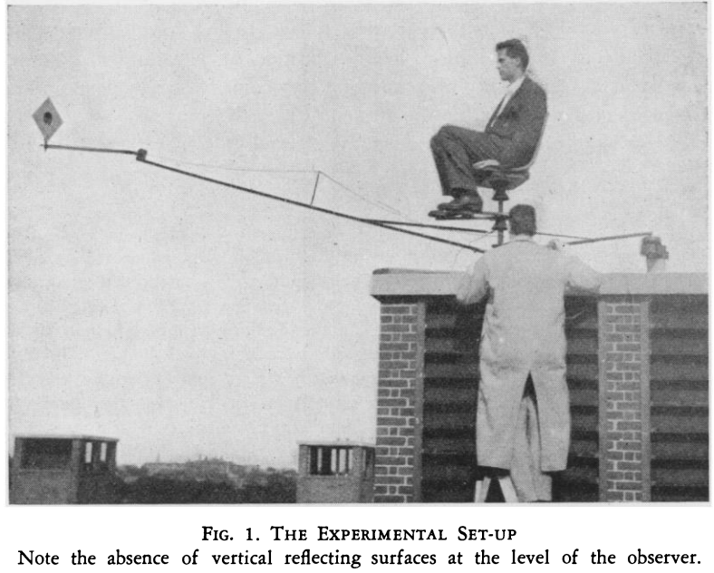

The Localization of Actual Sources of Sound
Author: S. S. Stevens & E. B. Newman
Date: April, 1936
Experiment 1
Subjects Tested: 1
The head begins to influence the amplitude response around 1 kHz, and in the horizontal plane produces increasing attenuation of the shadowed ear with increasing frequency (Shaw, 1973). Because the pinna is much smaller than the head, its effect does not become apparent until about 4 kHz.

Design Decisions
The apparatus used could be replicated in VR, however more recent experiments better control for variables whie coming to the same result. With only one subject, the ability to test many subjects under controlled conditions is greater in VR.